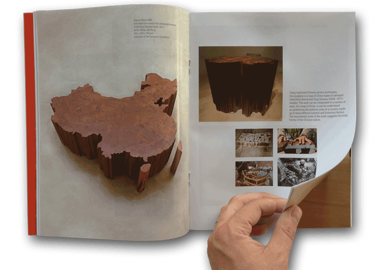

Along with the hardcover exhibition catalogue ($40) and the e-book ($20) the Hirshhorn also published a unique magazine version of the catalogue, inspired by a similar magazine from the 2009 Ai Weiwei exhibition at Munich’s Haus der Kunst. The magazine shared a common design with the hardcover and all the same content minus the backmatter. It was sold in the museum shop for $5. In Art in America Magazine, Deborah Horowitz, the Hirshhorn’s director of curatorial administration and publications said, “The magazine was produced with accessibility rather than profit in mind. The goal was to cover the cost of production.”